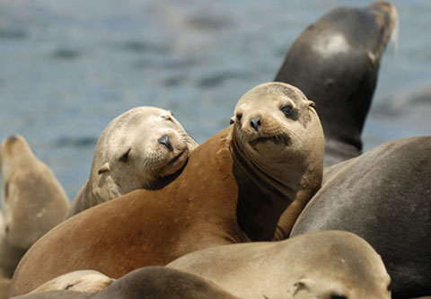
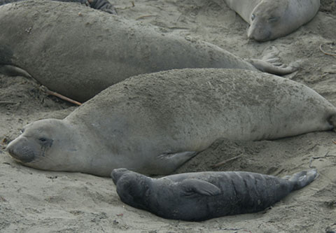
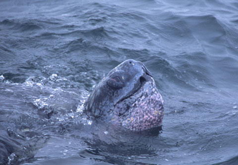

Any Dollar amount!
For any Stagnaro Trip
Call (831) 427-0230
Gift certificate doesn't guarantee a spot on a specific trip. Reservations required

California Sea Lion Zalophus californianus
The California Sea Lion is one of the most common marine mammals in the bay, both near shore and in the outer bay. They often can be seen hauled out on rocky outcroppings, islands and buoys. Adult Sea lions can weigh 800 lbs. They are very intelligent and are often seen following behind Salmon Fishing boats waiting to snatch a fish from their line.
Sea lions are very mobile on shore due to their long front flippers. They are usually the animals seen performing in marine theme parks.
Come view the beautiful Monterey Bay Marine Sanctuary aboard Velocity or Legacy! This trip focuses on viewing the abundant marine wildlife that inhabits our nearshore waters of northern Monterey Bay. Depending on the time of year your trip may include sightings of several species of Seals & Sea Lions, Sea Otters, Dolphins, marine birds, and sometimes even whales & great white sharks!
Trips are led by Marine Biologists and expert Naturalists. Historical points of interest are narrated by your captain during this 2 hour trip.
Adult $50
Child $33 (age 4-13)
Infant (3 & Under) FREE
*Plus $2 Port Fee per person
2 Hour Trips Late Spring through Late Fall

Southern (Californian) Sea Otter Enhydra lutris nereis

Harbor Seal Phoca vitulina
Easily distinguishable Harbor seals have dark fur that is mottled with light spots, or light fur that is mottled with dark spots. They have short pectoral flippers and are clumsy on shore.
Our best value and very popular with families, this calm water cruise offers spectacular views of our coastline and local marine life, usually including sea otters, sea lions and occasionally dolphins. Highlights of this tour include the Giant Kelp Forest, Seal Island, world famous Steamer’s Lane surfing spot, the beautiful Santa Cruz Yacht Harbor and the venerable Santa Cruz Beach Boardwalk. Bring your camera!
$30 Adults
$20 Children under 14
*Plus $2 Port Fee per person

Northern Elephant Seal Mirounga angustirostris
18 miles north of Santa Cruz, Ano Nuevo State Reserve is where Elephant seals return every winter to mate. It is rare to see them at sea. They are very deep diving feeding animals. Males have a distinct elongated snout.
Elephant seals derive their name from their great size and from the male’s large proboscis, which is used in making extraordinarily loud roaring noises, especially during the mating competition. There is a great sexual dimorphism in size, with the males (bulls) reaching five meters in length, much bigger than the females (cows), who average about three meters. The males average 16 ft (5 m) and 5,000 lb (2,300 kg), while the females average 1,400 lb (640 kg). Correspondingly, there is a highly polygamous mating system, with a successful male able to impregnate up to 50 females in one season. Beginning in the 1700s Northern elephant seals were hunted extensively almost to extinction by the end of the 19th century, being prized for oil that could be made from their blubber, and the population may have fallen as low as 100 to 1000. Finding refuge in Mexican waters, by the turn of the century, there was only a sole surviving rookery, on Guadalupe Island, Mexico; and this colony was granted protection by the Mexican government. Since the early 20th century, they have been protected by law in both Mexico and in the United States. Subsequently the U.S. protection was strengthened after passage of the Marine Mammal Protection Act, and numbers have now recovered to over 100,000.
These are the largest of all pinnipeds. There is an occasional Stellar sea lion that can be seen hauled out on Seal Rock off of Santa Cruz Point.

Sun Fish Mola mola
This odd circular shaped fish can be seen in summer mostly but can be seen anytime. It feeds on Plankton. The ocean sunfish, Mola mola, or common mola, is the heaviest known bony fish in the world. It has an average adult weight of one metric ton (2,200 lbs). The species is native to tropical and temperate waters around the globe. It resembles a fish head with a tail, and its main body is flattened laterally. Sunfish can be as tall as they are long when their dorsal and ventral fins are extended.

Leatherback Turtle Dermochelys coriacea
WOW – These turtles can get 6-7′ long. They can occasionally be seen feeding in the summer when the jellyfish are in.
The leatherback turtle (Dermochelys coriacea) is the largest of all living sea turtles and the fourth largest reptile behind three crocodilians.It is the only living species in the genus Dermochelys. It can easily be differentiated from other modern sea turtles by its lack of a bony shell. Instead, its carapace is covered by skin and oily flesh. Dermochelys coriacea is the only extant member of the family Dermochelyidae. Instead of teeth the Leatherback turtle has points on its upper lip. It also has backwards spines in its throat to help it swallow food. Leatherback turtles can dive to depths as great as 4200 feet (1,280 meters).
Blue sharks are somewhat common in the summer. White sharks occasionally can be seen at anytime. They feed on large fish and pinnipeds.
Basking sharks can reach 25′, are dark gray in color and are plankton feeders.
Book your trip today! Book online now or call (831) 427-0230

Any Dollar amount!
For any Stagnaro Trip
Call (831) 427-0230
Gift certificate doesn't guarantee a spot on a specific trip. Reservations required